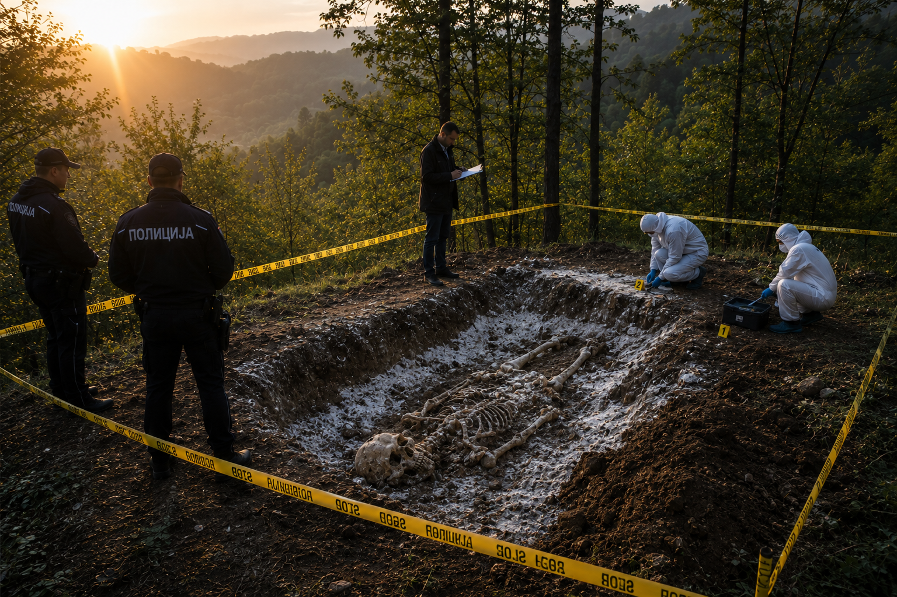

MUP
MINISTRY OF THE INTERIOR
Criminal Investigation Information System
GIS module · secure connection
0%
AUTHENTICATION SUCCESSFUL
Police Inspector Nikola Radić
ACCESS GRANTED
MUP
Investigative GIS
Criminal Investigations Directorate · Internal system
Case
K-0426/26
Satellite GIS View
44.3118 N · 20.5324 E
Forensic Records
Recovery Site Photograph
×
×

EVIDENCE · PHOTO 01
The photograph was automatically downloaded as
Slika_pronadjenog_tela.png
.
The photograph was added to case K-0426/26.